Partes de nieve · Guías
Partes de nieve diarios para esquiadores: dónde está la nieve, qué llega y dónde esquiar, a partir del mapa de nieve de SnowScope y de las estaciones de medida. Cada cifra sale de los datos del día.

Esquiar en Lachtal en diciembre: forfait de día 62 EUR, niños hasta 6 años gratis, 46 cm a media montaña un 15 de diciembre típico, pero con tendencia a la baja.

Los forfaits online de White Pass empiezan en 69 $ en días de valle y 89 $ en días punta, y a media montaña hubo 20 in (50 cm) de nieve el 15 de diciembre en el 87 % de los inviernos pasados.

Esquía los 131 km de pistas en la Forêt Blanche este diciembre con un pase de seis días por 298 EUR.

Ruka en diciembre: forfait de 6 días 265 EUR, día 58 EUR; 36 cm un 15 de diciembre típico, pero solo el 39 % de inviernos con 30 cm la primera semana.

En Monterosa Ski el forfait de día online va de 40,00 a 71,00 EUR. En diciembre la nieve está arriba: 124 cm habituales a 3030 m, 6 cm a 1207 m.

En Wolf Creek, el forfait de adulto cuesta 96 $ los días normales y 110 $ los días punta para la temporada 2026-2027; a media montaña había 34 in (87 cm) de nieve en un 15 de diciembre típico.

Fellhorn/Kanzelwand en diciembre: 63 cm en la cima (1965 m) un 15 de diciembre típico, 10 cm abajo; forfait de 6 días de Adviento a 344,50 EUR hasta el 20 de diciembre.

Planifica tu viaje de diciembre de 2026 a Les Orres comparando los precios de los pases semanales con nuestro historial de nieve de 46 inviernos pasados.

Hemavan en diciembre: 82 cm a media montaña un 15 de diciembre típico, todos los inviernos con 30 cm a mitad de mes; el diciembre más nevado de nuestra selección nórdica.

Los forfaits de día de Brighton parten de 72 $ para 2026/27 si se compran con antelación. A media montaña suele haber 37 in (94 cm) de nieve el 15 de diciembre, frente a 25 in (64 cm) en Park City.

Compara Grandvalira y estaciones españolas en diciembre de 2026 en cuanto a espesores de nieve, cotas de remontes y precios desde 49,00 EUR.

Glaciar del Pitztal en diciembre: 87 cm a media montaña un 15 de diciembre típico, más nieve que en los años 80; forfait de día 77 EUR, 6 días 410 EUR.

16 estaciones de esquí económicas de EE. UU. clasificadas según las probabilidades de nieve en diciembre de 46 inviernos pasados, con los precios diarios verificados: desde 49 $ entre semana hasta 125 $ o más.

Para una semana de esquí familiar a buen precio en diciembre en Astún-Candanchú, apunta a finales de mes, cuando las pistas altas tienen buena nieve en el 67 % de los inviernos pasados.

Alemania en diciembre: la Zugspitze y la cima del Fellhorn tenían 30 cm a mitad de mes en al menos 9 de cada 10 inviernos; Sudelfeld, Brauneck y Feldberg rara vez.

Puy-Saint-Vincent combina un forfait de adulto de 1 día por 44 EUR con una buena cantidad de nieve en diciembre en las zonas altas, comparado aquí con su gran vecino Serre Chevalier.

En los 46 inviernos pasados que tenemos registrados, la media montaña de Grand Targhee tuvo siempre al menos 20 in (50 cm) el 15 de diciembre. El forfait de un día online cuesta entre 125 $ y 180 $ según la fecha.

Oppdal en diciembre: 60 cm en la base (585 m) un 15 de diciembre típico, 93 % de inviernos con 30 cm a mitad de mes, mejor que la base de Trysil.

Grimentz-Zinal ofrece 71 km de pistas y nieve fiable en altura para tu viaje de diciembre, con pases de 6 días a CHF 339,00.

Austria antes de Navidad: Galtür 258 EUR y Kühtai 269 EUR por 6 días, con 30 cm en más del 90 % de los inviernos; los glaciares cuestan más, las estaciones pequeñas son una apuesta.

¿Planeas un viaje en diciembre a Baqueira Beret? Mira nuestro historial de nieve, precios de forfaits desde 70,00 € para un pase de 1 día, y cómo se compara con Astún-Candanchú.

Clasificamos las estaciones de esquí francesas según las probabilidades de nieve en diciembre y los precios de los forfaits, empezando desde 36,00 EUR por un pase diario de adulto en Les Karellis.


Galtür en diciembre: 55 cm a media montaña un 15 de diciembre típico, 93 % de inviernos con 30 cm a mitad de mes; día en temporada baja 55,50 EUR hasta el 18 de diciembre.

Geilo en diciembre: 57 cm a media montaña un 15 de diciembre típico, 96 % de inviernos con 30 cm a mitad de mes; forfait de día desde 590 NOK (unos 56 EUR).

A menudo se vende Grandvalira como una opción económica para esquiar en diciembre, pero la nieve natural en la base promedia solo 9 cm en nuestros inviernos pasados.

Hemsedal en diciembre: 70 cm a media montaña y 106 cm en la cima un 15 de diciembre típico, pero 32 cm en la base; Geilo, al lado, desde 590 NOK el día.

Glaciar de Hintertux en diciembre: 98 cm a 3245 m y 52 cm a media montaña un 15 de diciembre típico; forfait de día 82 EUR, 6 días 399 EUR.

Compara las probabilidades de nieve en diciembre y los precios verificados de forfaits desde 40,00 EUR en las estaciones italianas para tu escapada de fin de semana en coche.

Esquiar en Kühtai en diciembre: 60 cm en la base (1939 m) un 15 de diciembre típico y forfait de 6 días en temporada baja a 269 EUR hasta el 18 de diciembre.

Les 2 Alpes llega a los 3511 m para asegurar nieve en diciembre de 2026, con un forfait de adulto de 6 días por 266,50 EUR.

Les Karellis ofrece 45 km de pistas y un forfait de 6 días para adultos por 191,00 EUR, con un 98 % de probabilidad de nieve a media montaña a finales de diciembre.

Levi en diciembre: 38 cm un 15 de diciembre típico, 91 % de inviernos con 30 cm en Navidad y más nieve que antes; forfait de día 60 EUR, 57 EUR en línea.

Esquía en Livigno por 51,50 EUR al día antes del 18 de diciembre, cuando la nieve en la cima alcanza los 30 cm en el 100 % de los inviernos pasados.

En Michlifen, el 89 % de los inviernos casi no tienen nieve el 15 de diciembre (menos de 5 cm). Lo que dicen 46 inviernos sobre esquiar en el Atlas Medio en diciembre.

Montgenèvre tiene 56 cm de nieve habitual en diciembre en su base, dando a los esquiadores de fin de semana una cobertura más profunda que Sestriere al otro lado de la frontera.

Esquiar en Obertauern en diciembre: 43 cm un 15 de diciembre típico a media montaña y forfait de 6 días a 331 EUR antes de Navidad.

Oukaïmeden a mediados de diciembre: 16 cm en la media montaña en un invierno típico, 50 cm o más en solo el 11 % de los inviernos. Fecha por fecha, lo que dicen 46 inviernos.

Oukaïmeden está a 50 km en línea recta de Marrakech. Cómo lograr un fin de semana de esquí en diciembre: cuándo ir, qué probabilidades de nieve hay, qué se sabe de los precios.

Les 3 Vallées: 75,70 € al día del 5 al 18 de diciembre de 2026. Oukaïmeden: sin tarifa oficial online, 16 cm en la media montaña a mediados de diciembre. La comparación honesta.

Pila, sobre Aosta, combina un forfait de día a un precio fijo de 60,00 EUR con una nieve de diciembre fiable en sus cotas altas.

Los remontes de Saas-Fee llegan a 3556 m, donde nuestro historial de nieve muestra que el 100 % de los inviernos pasados tienen al menos 30 cm de nieve a mediados de diciembre.

12 estaciones nórdicas en diciembre: Hemavan, Hemsedal y Geilo tenían 30 cm a media montaña a mitad de mes en el 96-100 % de los inviernos; día en Finlandia 58-60 EUR.

Probabilidades de nieve en diciembre de 46 inviernos y precios diarios verificados: Ski Cooper 49 $, Les 3 Vallées 75,70 €, Oukaïmeden sin tarifa oficial. Dónde funciona un día de esquí barato en diciembre.

Descubre las tranquilas pistas de St-Luc Chandolin, donde la nieve a media montaña ha alcanzado los 30 cm en el 98 % de los inviernos durante finales de diciembre.

Trysil en diciembre: 44 cm a media montaña un 15 de diciembre típico, 83 % de inviernos con 30 cm a mitad de mes; los precios son dinámicos, reserva pronto.

Valloire-Valmeinier ofrece 131 km de pistas y un 98 % de probabilidad de tener 30 cm de nieve a media montaña a mediados de diciembre.

Zugspitze en diciembre: 122 cm a 2627 m un 15 de diciembre típico, forfait de día adulto en línea 70,50 EUR; debajo, Garmisch-Classic 69 EUR con mucha menos nieve.

Mölltaler Gletscher en diciembre: 66 cm en el remonte más bajo (2103 m) y 128 cm a media montaña un 15 de diciembre típico; 6 días en temporada baja a 332 EUR.

Mt. Baker en diciembre: 46 in (116 cm) de nieve a media montaña en un 15 de diciembre típico, y un forfait de 98,80 $ de lunes a jueves, que solo se vende el mismo día en taquilla.

¿Puede un esquiador principiante y prudente confiar en Courmayeur en diciembre, cuando la media a media altura es de 60 cm de nieve según nuestro historial de inviernos pasados?

Åre en diciembre: 40 cm a media montaña un 15 de diciembre típico, 89 % de inviernos con 30 cm a mitad de mes, pero una fuerte caída en la cima desde los 80.

Condiciones para esquiar en Deer Valley el 13 de noviembre de 2026: todavía sin nieve de verdad en el suelo, unas 4 in cerca de la cima con el temporal del fin de semana, lluvia en el lado bajo de East Village por debajo de unos 6,700 a 7,600 ft, y 11 in arriba en la semana.

Previsión de nevadas en Park City (Utah) el 13 de noviembre de 2026: casi sin nieve en el suelo ahora mismo, unas 5 in cerca de la cima con el temporal del fin de semana y una cota de nieve de 7,400 a 7,700 ft, lluvia en la base y unas 12 in arriba en la semana.
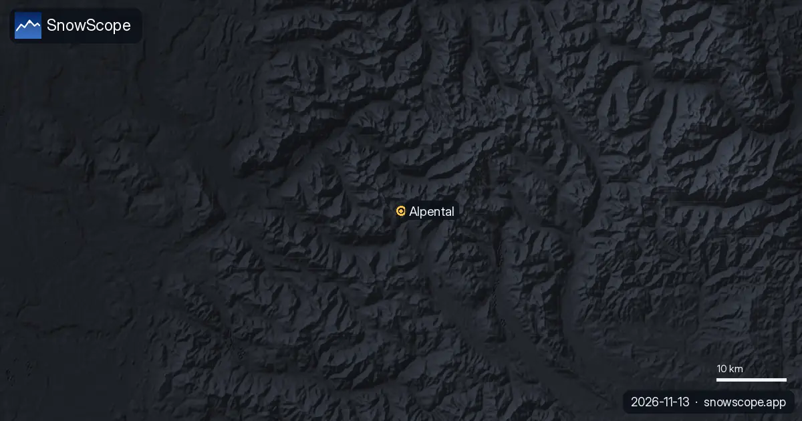
Previsión de nieve en Alpental el 13 de noviembre de 2026: cerca de 1 in en la parte alta, lluvia casi hasta la cima este fin de semana con la cota hacia 5,400 a 5,600 ft, y después 4 a 5 in de lluvia y nieve mezcladas arriba la semana que viene.

Repaso de la nieve en Bogus Basin para los esquiadores de Boise el 13 de noviembre de 2026: todavía sin nieve en el suelo, lluvia y nieve húmeda este fin de semana con la cota hacia 6,300 a 6,800 ft, y después aire más frío y unas 8 in en la cima para la semana que viene.

El plano de pistas de Sillian (Hochpustertal) con nuestra capa de nieve el 13 de noviembre de 2026: 8,6 cm en la cima a 2399 m, laderas bajas sin nieve y una semana de lluvia y nieve mezcladas con la cota hacia 1.800 a 2.000 m.
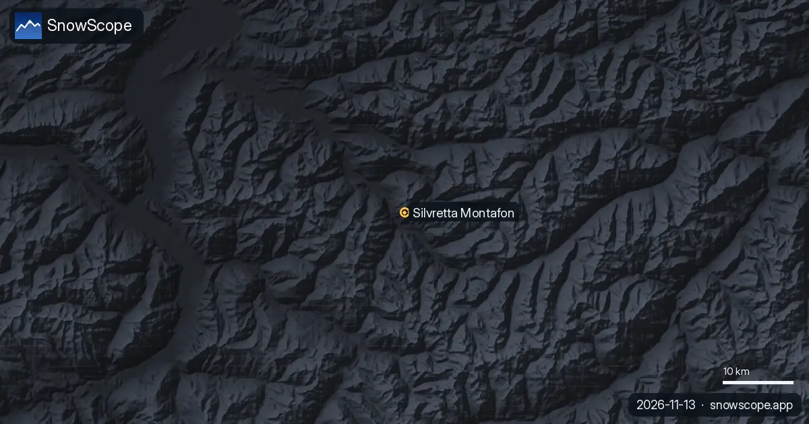
Estado de la nieve en Silvretta Montafon el 13 de noviembre de 2026: 4,5 cm en la cima a 2421 m, media montaña y valle sin nieve, unos 40 cm en camino arriba esta semana y lluvia en el valle por debajo de 1.500 m.

Parte de nieve de Lech Zürs del 13 de noviembre de 2026: unos 6 cm en la cima (2436 m) y a media montaña, nada en Lech a 1430 m. Esta semana 42 cm arriba según nuestra previsión, hasta 91 cm según otras, lluvia y nieve mezcladas hacia los 1400 m. Y por qué Lech es el lado nevado del Arlberg.

Espesor de nieve en St. Anton am Arlberg el 13 de noviembre de 2026: cerca de 1 cm en la cima (2642 m), 5 cm a media montaña, nada en el pueblo. Esta semana 42 cm en la cima y 33 cm a media montaña, lluvia por debajo de unos 1480 m. Cuánta nieve necesitan las pendientes fuertes.

Parte de nieve de Obergurgl del 13 de noviembre de 2026: unos 20 cm en la cima (3024 m), 5 cm a media montaña, nada en los remontes de abajo (1784 m). Previsión de la semana: 34 cm arriba, 21 cm abajo, cota de nieve cerca de 1700 m. Y el comienzo de temporada habitual.

Espesor de nieve en Sölden el 13 de noviembre de 2026: unos 9 cm en la cima (3245 m), 5 cm a media montaña, nada en el valle a 1346 m. 25 cm previstos arriba esta semana, lluvia por debajo de unos 1620 m. Glaciar frente a pueblo, con 46 inviernos pasados.

Nevadas en Val Thorens, 13 de noviembre de 2026: 27 cm caídos en la cima (3175 m) y 17 cm a 2498 m en siete días; el espesor de nieve es de 50 cm y 8 cm. Próximos siete días: 86 cm en la cima, 73 cm a 2498 m, cota de nieve muy por debajo del pueblo. La temporada habitual según 46 inviernos.

El espesor de nieve en Chamonix el 13 de noviembre de 2026, altura por altura: nada en el fondo del valle, 1 cm a 2001 m, 12 cm arriba en Brévent-Flégère (2486 m), de 5 a 24 cm arriba en Les Grands Montets (2768 m). Cerca de un metro previsto en altura esta semana, lluvia en el valle. Cuánta nieve suele tener Chamonix, según 46 inviernos.

Espesor de nieve en Ischgl el 13 de noviembre de 2026: unos 5 cm en la cima (2868 m), 4 cm a media montaña, nada en el valle a 1352 m. Hasta 42 cm en la cresta esta semana, lluvia en el Paznaun por debajo de unos 1570 m. Y valle frente a cresta en 46 inviernos.

Parte de nieve de Les Menuires del 13 de noviembre de 2026: 28 cm en la cima (2838 m), nada en el suelo a 2112 m ni a 1386 m. Unos 80 cm esperados en la cima en siete días, cota de nieve hacia 1500 a 1700 m. Por qué Val Thorens, 450 m más arriba en el mismo valle, ya tiene más.

Estado de la nieve en Tignes el 13 de noviembre de 2026: 42 cm en la cima (3447 m), 12 cm a 2503 m, valle sin nieve a 1559 m y 99 cm previstos en la cima en siete días, con lluvia por debajo de unos 1700 m. La comparación con 46 inviernos pasados.
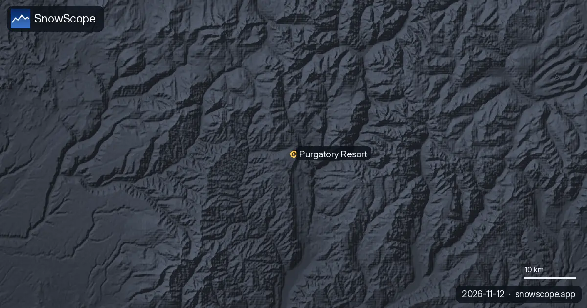
El parte de esquí de Purgatory Resort (Durango, Colorado) según nuestro modelo de nieve: 3 in (7 cm) en la cima, base y media montaña sin nieve, de 4 a 7 in de nieve nueva previstos en los próximos siete días, y cómo es un invierno habitual en Purgatory.

Las condiciones de nieve en La Rosière en nuestra pasada del modelo del 11 de noviembre: 24 cm en la cima (2799 m), media montaña y pueblo sin nieve, y una previsión a siete días de 108 cm en la cima y 61 cm a media montaña. La vertiente soleada del Pequeño San Bernardo en cifras.

La nieve en Alpe Devero (Ossola, Piamonte) según nuestro modelo: 2 cm en la cima (2201 m), nada más abajo, 36 cm de nieve nueva previstos en la cima en los próximos siete días. La pequeña estación sin coches y su invierno habitual en cifras.

El parte de nieve de Les Arcs según nuestro modelo: 34 cm en la cima (3205 m), 2 cm a media montaña, base sin nieve, y hasta 69 cm de nieve nueva previstos en la cima en los próximos siete días. Lo que Les Arcs suele tener en noviembre y diciembre.

Las condiciones de nieve en Méribel según nuestro modelo del 11 de noviembre: 24 cm en la cima (2920 m), 1 cm a media montaña, valle sin nieve, y una previsión de 99 cm en la cima y 58 cm a media montaña en los próximos siete días. El invierno habitual de Méribel en cifras.

El mapa de pistas de Isola 2000 con la nieve de hoy: 9 cm en la cima, 7 cm a media montaña, 2 cm en la base tras 31 cm en una semana, cómo se reparten los sectores Pelevos, Saint-Sauveur y Lombarde, y lo que trae un invierno habitual.

Todavía sin nieve en Oukaïmeden: 0 cm en las tres alturas, nada en los últimos siete días, nada en la semana que viene. Lo que trae un noviembre habitual al Alto Atlas y cuándo apuntar al esquí.


Hemos comparado la nieve del 10 de noviembre con la mayor altura de nieve de cada invierno en 46 estaciones de esquí durante 46 inviernos. Un comienzo nevado ayuda, pero menos de lo que creen muchos esquiadores.

Una tormenta el 4 de noviembre dejó de 8 a 13 inches de nieve nueva en cinco estaciones altas de Colorado cerca de Aspen. Cinco días después, la mitad había desaparecido. Qué significa esto para los días de powder.

Cuánto tiempo estuvieron blancos los Pirineos cada invierno desde 2000-01, vistos por satélite, y el espesor de nieve en 10 estaciones con series largas. Tres inviernos flojos seguidos terminaron en 2025-26; este otoño ha empezado con normalidad.

Un mapa de pendientes de Les Grands Montets y otras siete estaciones muestra cuánto terreno supera los 30°, 35° y 40°, y por qué ese umbral importa para los aludes.

En 24 de 46 inviernos, las estaciones de la vertiente italiana y del sur de los Alpes franceses tuvieron un invierno relativamente mejor que la vertiente norte. El gráfico, los grandes años y el tiempo que hubo detrás.

En diciembre, la nieve depende sobre todo de la altura. 46 inviernos pasados en 676 estaciones de los Alpes muestran cuánta nieve esperar el 1, el 15 y el 22 de diciembre, desde menos de 1200 m hasta más de 2400 m.

Whistler Blackcomb recibió 75 cm de nieve nueva en la cima en una semana y después una tormenta templada con 124 mm de agua. Una guía sencilla sobre base, nieve nueva, lluvia y costra.

Un plan barato de 3 días en el lago de Como en diciembre con precios reales 2026-27: trenes, barcos, funicular y esquí en Piani di Bobbio o Madesimo, lo que ahorras frente a Cortina y la probabilidad de nieve en Navidad.

La nieve de hoy en Livigno, lo que dice la previsión estacional europea para diciembre y por qué en Navidad la altitud gana a un mes templado.

La nieve de hoy en Cortina, la previsión estacional europea para diciembre y nuestras probabilidades de una Navidad blanca en el este de los Dolomitas.

Dónde diciembre de 2026 parece más o menos nevado en los Dolomitas, de Val Gardena a Cortina: la previsión estacional europea, nuestro mapa y las probabilidades de una Navidad blanca.
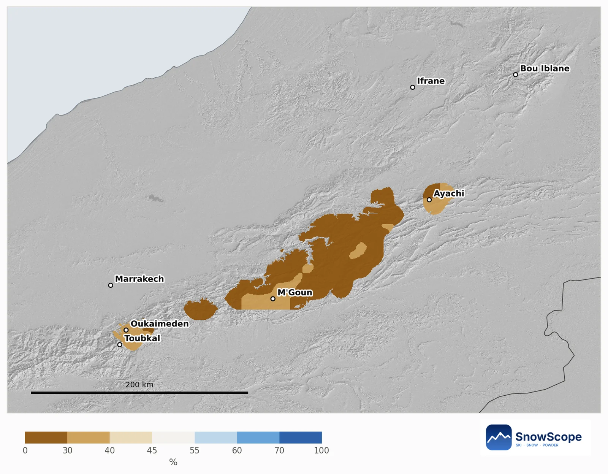
Cuánta agua podría guardar la nieve del Atlas en febrero de 2027: la previsión estacional europea es unos 3 °C más cálida y más húmeda al oeste y al sur, así que las probabilidades de nieve siguen bajas en las cuencas de Marruecos.

La previsión estacional europea hace enero de 2027 unos 2 °C más cálido en el Atlas. Nuestra tendencia para el espesor de nieve, el agua de la nieve y el agua almacenada para los ríos de Marruecos.

El Bou Iblane sigue sin nieve. La previsión estacional europea ve un diciembre claramente más cálido, y en todo el Medio Atlas nevado nuestras probabilidades se inclinan a menos nieve.

Dónde diciembre de 2026 parece más o menos nevado de Montana a Nuevo México: la previsión estacional europea y nuestro mapa, con Colorado, Utah y las Rocosas del Norte.

¿Se llenará el manto de nieve de los Écrins a los Alpes Marítimos y el Piamonte como de costumbre en diciembre de 2026? La previsión estacional europea y nuestro mapa, montaña a montaña.
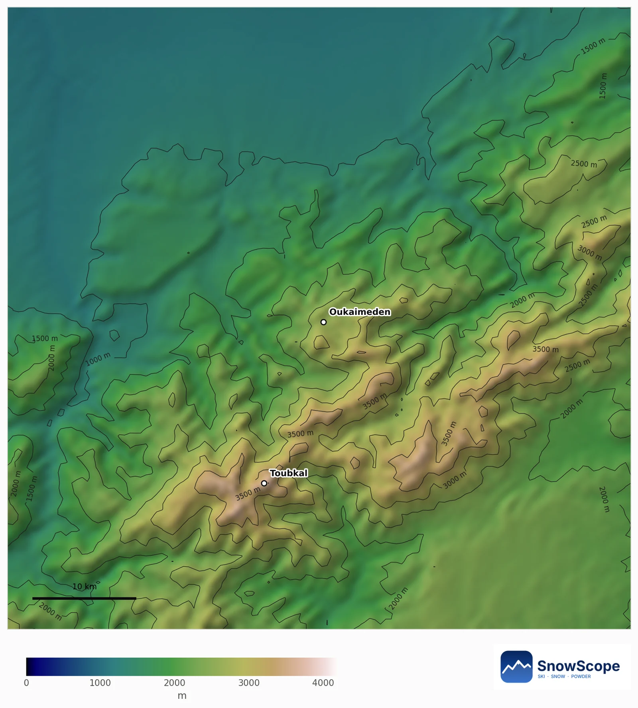
Todavía sin nieve en Oukaimeden. La previsión estacional europea ve un diciembre más cálido en el Alto Atlas, y nuestro mapa muestra probabilidades más bajas en casi todas las cumbres.

La nieve de hoy en Grands Montets, la previsión estacional europea para diciembre y nuestro mapa de dónde diciembre parece más o menos nevado alrededor del Mont Blanc.
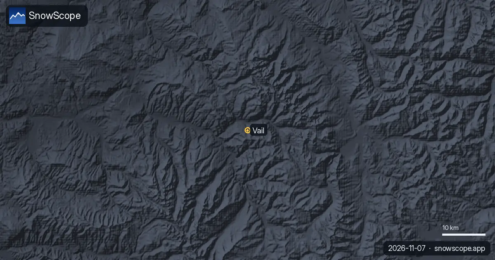
Vail en cifras: un pico habitual de unas 64 in (162 cm) a media montaña en 46 inviernos pasados, marzo el mes más nevado, más terreno, acceso y seguridad.

Zermatt en cifras: dónde dura la nieve, los meses más seguros y cómo llegar al pueblo sin coches, a partir de 46 inviernos pasados.

Steamboat, Colorado, en familia: qué funciona para los más pequeños, los niños, los adolescentes y los padres, con la nieve de 46 inviernos pasados a tres alturas.

¿Es Verbier para principiantes? ¿Cuándo es mejor la nieve? ¿Cómo se llega? Respuestas sobre las 4 Vallées y 46 inviernos pasados.
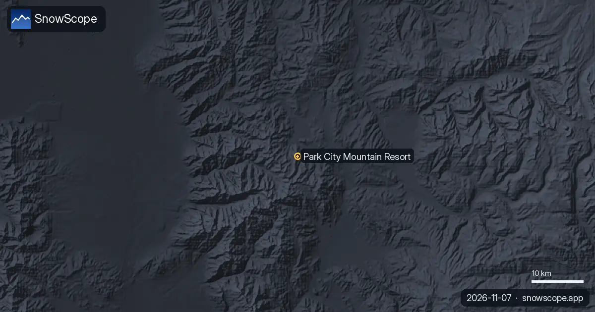
Cómo pasar el primer día en Park City Mountain, Utah, y cuándo ir: nuestro histórico da unas 71 in (180 cm) de pico habitual a media montaña en 46 inviernos pasados.

Una imagen, 100 cordilleras en los Alpes, los Pirineos, el Atlas y Norteamérica: Canadá lidera con un 89 % de cobertura de nieve, los Alpes llegan al 45 %, el Atlas y el noreste de EE. UU. siguen sin nieve.

La Sella Ronda desde Sëlva en Val Gardena: puertos de Gardena, Campolongo, Pordoi y Sella en orden, con nuestro histórico de nieve de 46 inviernos pasados.

Mt Baker, Washington: unas 133 in (337 cm) de pico habitual a media montaña en 46 inviernos pasados, un récord mundial de nieve y ningún alojamiento a pie de pista.

Val d'Isère y el Espace Killy para principiantes, esquiadores medios y expertos, con la nieve de 46 inviernos pasados a tres alturas.

Planifica Mammoth Mountain por temporada: unas 93 in (235 cm) de pico habitual a media montaña en 46 inviernos pasados, marzo el más nevado, primaveras largas e inviernos variables.

Kitzbühel es famosa y baja. Lo que dicen 46 inviernos pasados de la nieve a 762 m, 1.377 m y 1.993 m, qué ha cambiado y qué semanas son la apuesta más segura.
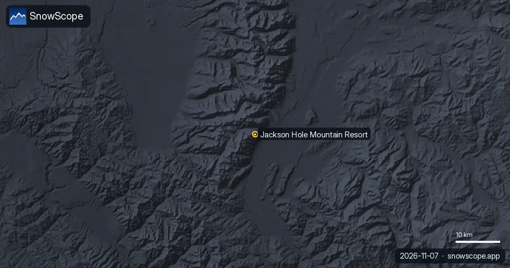
Los mitos sobre Jackson Hole frente a los hechos y nuestro histórico: unas 80 in (204 cm) de pico habitual a media montaña en 46 inviernos pasados, sin un descenso claro.
Comparamos el mapa de espesor de nieve de SnowScope con 2.012 estaciones de medida: RMSE 7,7 cm, sesgo -0,5 cm, nieve o no nieve acertado el 88 % de las veces. Lo que funciona, lo que aún no y lo que mejoramos después.

Diez puntos prácticos para un viaje de esquí a Livigno: las carreteras, el frío, las tiendas libres de impuestos, las dos laderas y la mejor época de nieve, según 46 inviernos pasados.

Llegar a Telluride en invierno, aeropuerto por aeropuerto: Telluride Regional, Montrose, la carretera 145 con la ley de tracción de Colorado y la telecabina gratuita a Mountain Village.

Cómo suele transcurrir un día de nieve en Whitewater, cerca de Nelson, desde la primera mirada a la previsión hasta la última bajada, con la nieve de 46 inviernos pasados a tres alturas.

Arc 1600, 1800, 1950 y 2000 comparados por nieve, pistas y acceso, con 46 inviernos pasados de nuestro histórico de nieve a tres alturas de Les Arcs.
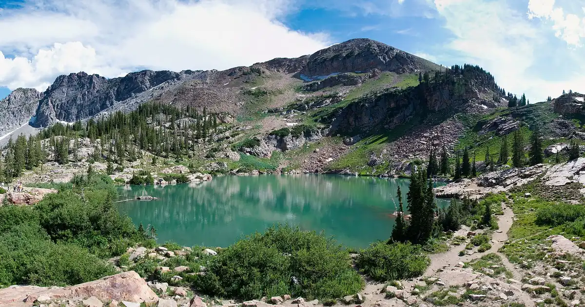
Llegar a Snowbird en invierno: una sola carretera de cañón (SR-210), la ley de tracción de Utah, el bus de esquí de UTA y el trayecto desde el aeropuerto.

Whistler Blackcomb para cada nivel, con nuestro histórico: unos 370 cm de pico habitual a media montaña en 46 inviernos pasados, marzo y abril los meses más nevados.

De los campesinos walser al Weißer Ring: las fechas que hicieron Lech Zürs y, después, nuestro histórico de nieve antes y ahora, los primeros quince de 46 inviernos pasados frente a los últimos quince.

En coche a Palisades Tahoe en invierno: distancias desde Reno y Sacramento, cadenas R-1, R-2 y R-3 en California, aparcamiento con reserva, buses TART.
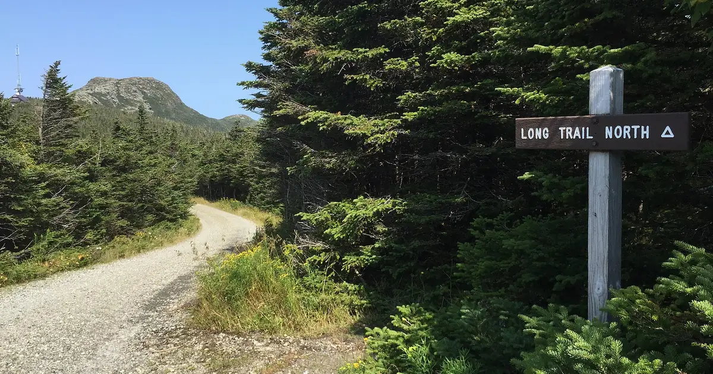
Una lista práctica para Stowe, Vermont: capas, protección de la cara, máscara, cantos afilados y calentadores, ligada a la nieve de 46 inviernos pasados en Mount Mansfield.

Esquiar en Lake Louise a principio de temporada: por qué empieza pronto, cómo suele ser la nieve de noviembre y diciembre en 46 inviernos pasados y cómo esquiar sobre una base todavía fina.
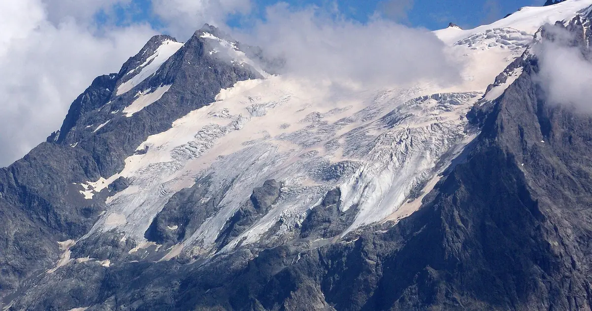
Qué es verdad de La Grave, la montaña del fuera de pista bajo la Meije: terreno, seguridad, nieve por mes y tendencia, a partir de 46 inviernos.

Big Sky, Montana, fácil de imaginar: 5850 acres bajo el Lone Peak, y una nieve unas cinco veces más gruesa cerca de la cima que en la base en 46 inviernos pasados.